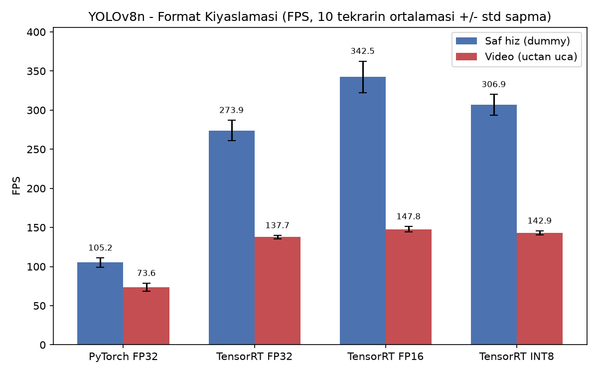
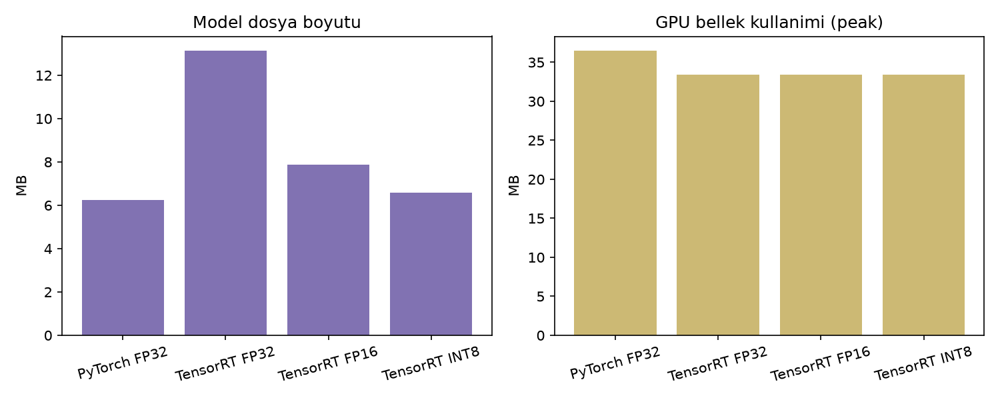

Deneysel bulgular
FP16 en dengeli çalışma noktası
FP16, temel PyTorch modeline göre saf çıkarımda 3,26 kat ve video hattında 2,01 kat hızlanırken mAP50–95 değerini 0,3681'den 0,3678'e taşıdı. INT8 daha küçük dosya üretmesine rağmen doğruluk kaybı ve FP16'dan düşük hız nedeniyle bu sistemde en iyi seçenek olmadı.
| Çalışma biçimi | Saf FPS | Video FPS | mAP50–95 | Boyut |
|---|---|---|---|---|
| PyTorch FP32 | 105,19 ± 5,89 | 73,60 ± 5,06 | 0,3681 | 6,25 MB |
| TensorRT FP32 | 273,90 ± 13,11 | 137,66 ± 2,02 | 0,3678 | 13,14 MB |
| TensorRT FP16 | 342,52 ± 20,03 | 147,79 ± 3,29 | 0,3678 | 7,86 MB |
| TensorRT INT8 | 306,91 ± 13,11 | 142,92 ± 2,68 | 0,3272 | 6,59 MB |


Yöntem
Ölçülebilir ve yeniden üretilebilir
Ortam
NVIDIA GeForce RTX 5060 Laptop GPU, TensorRT 11.2.1.2, PyTorch 2.7.1 ve CUDA 12.8.
Hız protokolü
640×640 girdi; her sürüm için 10 ısınma, 100 ölçüm ve 10 bağımsız tekrar.
Doğruluk
COCO val2017 veri kümesindeki 5.000 görüntü üzerinde mAP50 ve mAP50–95.
Kapsam
Sonuçlar bu donanım-yazılım bileşimine özgüdür; TensorRT engine dosyaları hedef GPU'da yeniden oluşturulmalıdır.
Prototip
Gerçek zamanlı uygulama demosu
Webcam, video yükleme ve PyTorch/TensorRT çalışma biçimleriyle geliştirilen Streamlit arayüzünün kısa gösterimi.